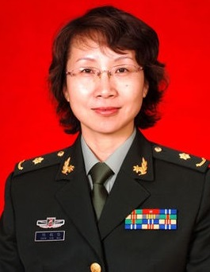
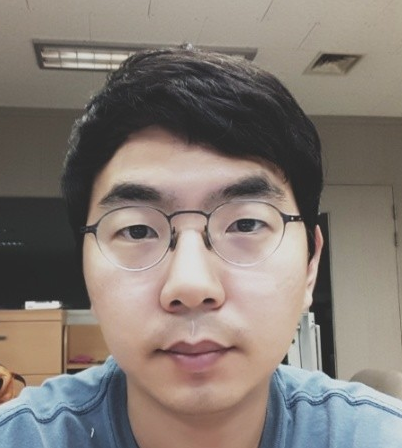
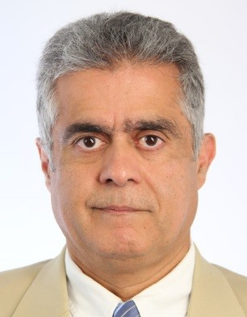
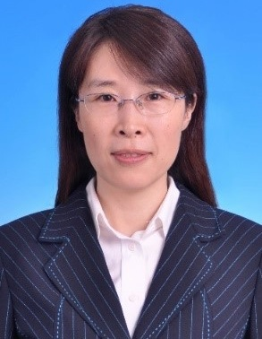
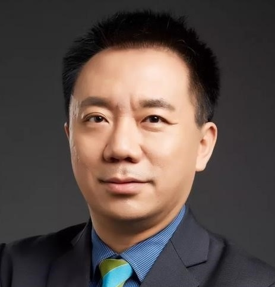
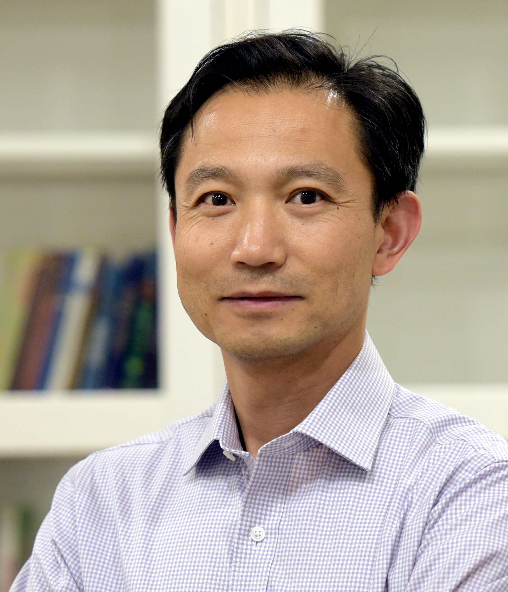
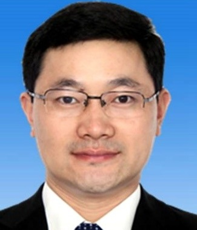
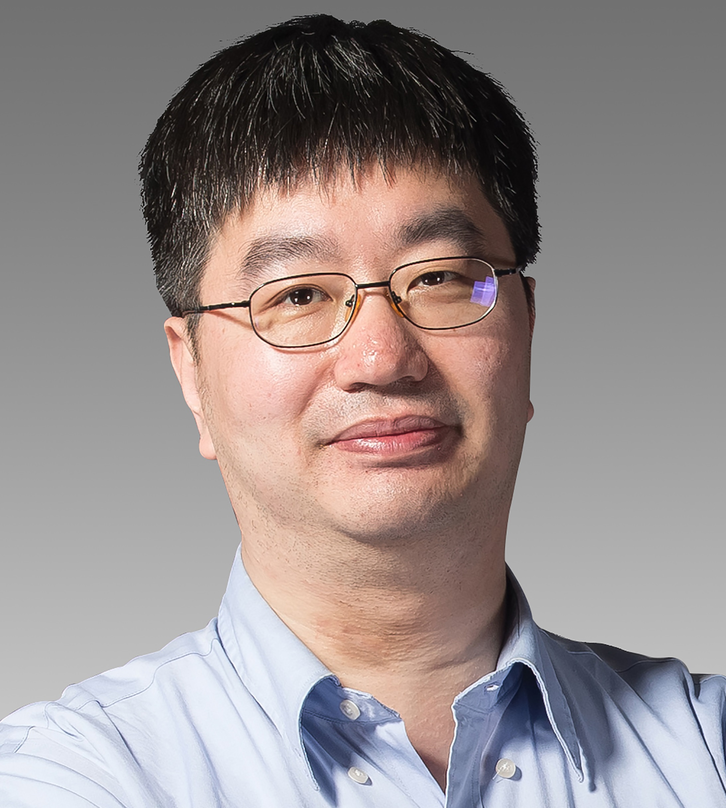

OVERVIEW
Medical imaging is one of the most promising application areas of artificial intelligence technologies. In recent years, with more and more mature AI technologies, various companies, including medical device vendors, internet companies and startups, have shown strong business interests in medical imaging AI. In particular, significant progress has shown in the productization of medical imaging AI.
For example, AI-based imaging recon has been embedded into scanners to drastically improve imaging speed and quality. AI-based triage has been used to prioritize reading tasks and improve workflow efficiency. AI-based diagnostic has been integrated to the radiological workflow and improve diagnostic efficiency and accuracy.
On the other hand, however, some key questions remain unanswered.
“What is the role of AI technology in clinical workflow?”
“What kind of AI products will revolutionarily change the clinical workflow?”
“Besides radiologists, how could medical imaging AI help other clinicians?”
“What is the business model of medical imaging AI?”
“What are the key factors of AI companies’ success?”
In this year’s MICCAI, a dedicated industry forum is set-up for a multidisciplinary discussion of these interesting topics. Experts from different areas, including radiologists, clinicians, industrial leaders and investors, are invited to share their opinions and discuss the future directions of medical imaging AI.
MICCAI Industry Workshop will be held on Oct 13, 2019 at Room Espana II in the InterContinental Hotel.
PURPOSE
To provide a platform for Radiologists, Physicians, Scholars, and Entrepreneurs from around the world to discuss the latest development of technologies on medical imaging and image guided intervention, the future technical trend in these areas, prospective of productization and commercialization of the technologies developed by the broad MICCAI community. The event will also provide a network to facilitate collaborations between clinical, research, and industry.
AGENDA
- Time
- 08:30-17:30, Oct. 13, 2019
- Venue
- Room Espana II in the InterContinental Hotel, Shenzhen
- Expected Audience Size
- 150
- Tentative Agenda
| No | Start | End | Duration | Topic | External speaker candidates |
|---|---|---|---|---|---|
| 1 | 9:00 | 9:15 | 15min | Opening Remark | |
| 2 | 9:15 | 9:45 | 30min | (Invited speaker) Radiologists' View of Medical Imaging AI | Ron Summers |
| 3 | 9:45 | 10:15 | 30min | (Invited speaker) AI Technology from a Physician's Perspective | Yundai Chen |
| 10:15 | 10:30 | 15min | Tea Break | ||
| 4 | 10:30 | 11:00 | 30min | (Invited speaker) Radiologists' View of Medical Imaging AI | Xiaoying Wang |
| 5 | 11:00 | 11:30 | 30min | (Invited speaker) Academic view of Medical Imaging AI | Hairong Zheng |
| 6 | 11:30 | 12:00 | 30min | (Invited speaker) Academic view of Medical Imaging AI | Nassir Navab |
| 12:00 | 13:30 | 90min | Lunch Break | ||
| 7 | 13:45 | 14:15 | 30min | Invited speaker from NIH | Behrouz N. Shabestari |
| 8 | 14:15 | 14:35 | 20min | United Imaging Intelligence | Yiqiang Zhan | 9 | 14:35 | 14:55 | 20min | IFlyTek Healthcare | Xiaodong Tao |
| 10 | 14:55 | 15:15 | 20min | Intuitive Surgical | Tao Zhao |
| 11 | 15:15 | 15:35 | 20min | Lunit | Ki Hwan Kim |
| 15:35 | 16:00 | 25min | Tea Break | ||
| 12 | 16:00 | 16:30 | 30min | One Venture Company to talk about the capital environment going forward in the next few years | Ruilin Zhao |
| 13 | 16:30 | 17:00 | 30min | A technical presentation to discuss future trend of AI in imaging | Kevin Zhou |
| - | 17:00 | Adjourn |
SPEAKERS
*Ranked by Last Name in Alphabetical Order|  |  |  |
| Yundai Chen Director and Professor, Department of Cardiology, Chinese PLA General Hospital |
Ki Hwan Kim Vice President, Medical Affairs, Lunit Inc. |
Nassir Navab Director and Professor, the Computer Aided Medical Procedures (CAMP) research laboratories, Technical University of Munich and Johns Hopkins University |
|  | ||
| Behrouz Shabestari Acting Director, the Division of Health Informatics Technologies, NIBIB |
Ronald M. Summers Senior Investigator, Imaging Biomarkers and Computer-Aided Diagnosis Laboratory, NIH Clinical Center |
Xiaoying Wang Director and Professor, Department of Radiology, Peking University First Hospital |
|  |  |  |
| Ruilin Zhao Partner, CD Capital |
Tao Zhao Managing Principal, Intuitive Surgical Inc. |
Hairong Zheng Deputy Director, Shenzhen Institutes of Advanced Technology, Chinese Academy of Sciences, China |
ORGANIZERS
*Ranked by Last Name in Alphabetical Order|  | |
| Xiaodong Tao iFLYTEK |
Yiqiang Zhan United Imaging Intelligence (UII) |